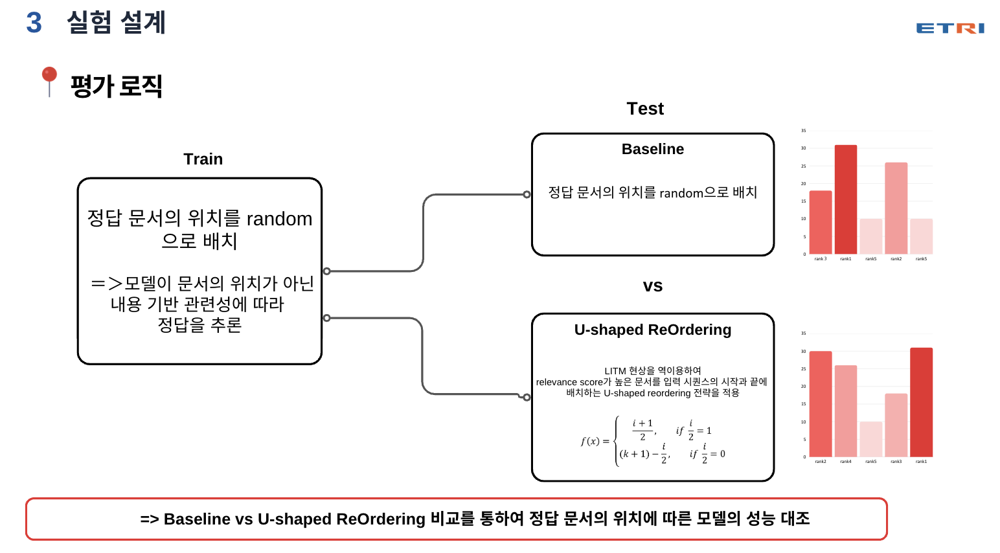

‹ Key Projects
Key Projects 01
>>>한국어 QA RAG 문서 배치 최적화
검색 문서 수와 정답 위치에 따른 한국어 QA RAG의 성능 편차를 줄이기 위해 문서 배치 조건을 비교 실험하여 가장 안정적인 설정(K=8) 도출
K=8가장 안정적인 훈련 문서 수
Architecture
전체적인 아키텍처
배치 전략 2종 비교 — Baseline(정답 위치를 무작위로 배치) vs U-shaped(관련성이 높은 문서를 입력의 시작과 끝에 배치).
Problem
문제 원인
- 같은 정답 문서를 입력해도 배치 위치에 따라 모델 정확도가 달라짐
- 정답 문서가 입력 중간에 배치되면 모델이 정보를 놓치는 현상 발생
- 검색 문서를 많이 넣을수록 불필요한 문서가 함께 늘어 성능이 떨어짐
- 모델 크기에 따라 위치·문서 수에 대한 민감도가 다르게 나타남
Process
해결 과정
- 문서 수 K를 여러 조건으로 나눠 실험하고 정확도를 비교
- Golden Document의 위치를 바꿔가며 정확도 변화를 측정
- 입력 문서의 시작과 끝에 경계 토큰([DOC_N])을 추가해 문서 단위를 구분
- 관련성이 높은 문서를 앞뒤에 배치하는 U-shaped 순서를 적용
- Qwen 1.5B와 7B를 동일한 조건에서 비교
- 테스트
- 정답 내용은 그대로 두고 문서 수와 위치만 바꿔 Baseline과 U-shaped 결과를 비교
- 검색 문서 수를 4→20개로 늘리며 모델 크기별 정확도 변화를 측정

Result
결과
- 검색 문서가 4개에서 20개로 늘수록 정확도 하락을 확인
- 훈련 문서 수 K=8 조건이 전체 구간에서 가장 안정적
- 7B 모델이 1.5B보다 문서 위치 변화에 덜 민감
- 문서를 많이 넣기보다 적절한 수와 순서를 정하는 것이 중요하다는 운영 기준을 도출